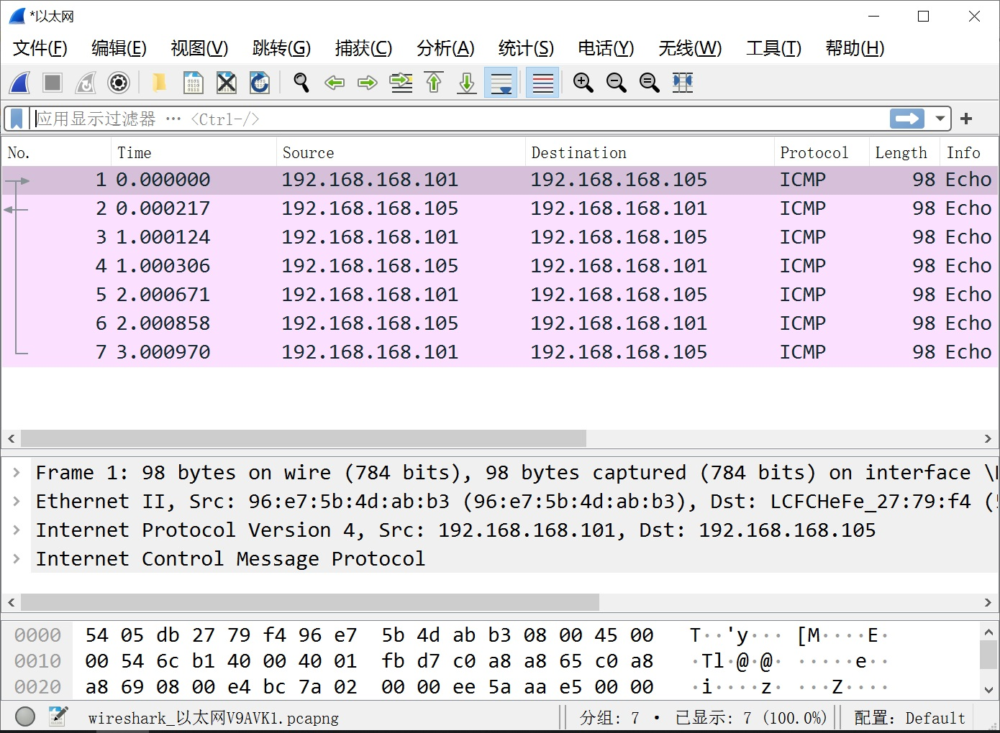

调试指南
调试开关
-
在 SDK 根目录下，执行下列命令，进入 kernel 的功能配置界面：
make kernel-menuconfig或使用简写命令
make km -
在内核配置界面，按如下选择，将 log 等级设置为最高 7：
Kernel hacking printk and dmesg options (8) Default console loglevel (1-15) (7) Default message log level (1-7) -
在 SDK 根目录下，执行下列命令，进入 kernel 的功能配置界面：
make kernel-menuconfig或使用简写命令
make km -
在内核配置界面，按如下选择，打开 GMAC 的调试开关：
Kernel hacking [*] Kernel debuging ArtInChip Debug [*] GMAC Driver Debug
功能验证
网络模块是否可以正常工作可以通过如下顺序排查：
-
驱动是否加载成功
-
本机 MAC 和 PHY 的连接是否成功
-
本机 PHY 和对端 PHY 的连接是否成功
-
本机网络和对端网络的连接是否成功
-
是否可以通信
- 驱动加载
在 log 等级为 7 的情况下，可以通过如下信息对模块的启动进程进行追踪
-
有任何的 error 信息输出，模块都将不正常工作，因此任何的 error 信息都必须要解决
- libphy: aicgmac: probed
总线注册成功
- aicmac_probe success.
驱动加载成功，使用 ifconfig -a 命令应该可以看到设备
-
其他日志
aicmac_phy_init_data phy_addr=1 aicmac_mac_init_data mac_interface:8 max_speed:1000 aicmac_mdio_init_data mdio:1 mac addr: 4a:2a1e:fbeb:26 aicmac_platform_get_config bus_id:0 libphy: aicgmac: probed aicmac_probe success.
-
- 设备可发现驱动加载成功的主要标志是网络设备存在，可以通过 ifconfig -a 命令查看设备是否存在，如果某一个设备不存在，则要排查驱动是否编译，是否加载，设备的系统参数和功能参数配置是否正确：
ifconfig -aeth0 Link encap:Ethernet HWaddr DA:BD:4C:BA:5D:80 BROADCAST MULTICAST MTU:1500 Metric:1 RX packets:0 errors:0 dropped:0 overruns:0 frame:0 TX packets:0 errors:0 dropped:0 overruns:0 carrier:0 collisions:0 txqueuelen:1000 RX bytes:0 (0.0 B) TX bytes:0 (0.0 B) Interrupt:25 eth1 Link encap:Ethernet HWaddr 6A:8D:2A:7F:EA:3E BROADCAST MULTICAST MTU:1500 Metric:1 RX packets:0 errors:0 dropped:0 overruns:0 frame:0 TX packets:0 errors:0 dropped:0 overruns:0 carrier:0 collisions:0 txqueuelen:1000 RX bytes:0 (0.0 B) TX bytes:0 (0.0 B) Interrupt:26 - 设备可启动
设备启动的时候 MAC 会尝试和 PHY 建立连接，可以通过 ifconfig eth0 up 命令来启动网络设备，如果启动不成功，则说明 MAC 和 PHY 的连接不成功， 居多 MDC 时钟不工作， 也可能是 phy-addr 设置错误：
ifconfig eth0 upgmac 10280000.ethernet eth0: PHY [aicgmac-0:01] driver [RTL8211F Gigabit Ethernet](irq=POLL) gmac 10280000.ethernet eth0: RX IPC Checksum Offload disabled gmac 10280000.ethernet eth0: configuring for phy/rgmii link mode - 网络可联通网络的联通是本机 PHY 和远端 PHY 通过网线建立的，同时要牵涉到 MAC 到 PHY,PHY 到 PHY，PHY 到 MAC 的一个循环
- 物理连接信息
PHY 和 PHY 的协商是自动的，不需要 MAC,AP 的参与，因此两个 PHY 通过网线连接时，二者应该是自协商成功的，对于有指示灯的系统，PHY 物理连接成功后指示灯会呼吸
- 模块状态信息通过命令 ifconfig eth0 up 打开设备，如果连接成功，则会报告 Link is Up 的信息，如下所示：
ifconfig eth0 upgmac 10280000.ethernet eth0: Link is Up - 1Gbps/Full - flow control rx/tx IPv6: ADDRCONF(NETDEV_CHANGE): eth0: link becomes ready如果没有连接成功，并且 MAC 和 PHY 的连接是成功的，则说明两个 PHY 的连接或者协商不成功，有两个可能
-
二者的工作模块无法协商成功，如某一方只支持百兆，而另一方只支持千兆，或者是两个标准的 PHY 模块等，可以更换对端的网络设备，如换为路由器，PC 等
-
物理网络不通，更换网线
# ethtool eth0 Speed: 1000Mb/s Duplex: Full Auto-negotiation: on master-slave cfg: preferred slave master-slave status: master Port: Twisted Pair PHYAD: 1 Transceiver: external MDI-X: Unknown Supports Wake-on: d Wake-on: d Current message level: 0x0000003f (63) drv probe link timer ifdown ifup Link detected: yes -
- 物理连接信息
- 网络可通信经过上述的排查，MAC 和 PHY，PHY 和远端 PHY 的通路均正常，则可以进行网络通信验证：
-
通过 ifconfig eth0 ipaddr 设置一 IP 地址：
fconfig eth0 192.168.168.100 -
通过 ping 对端 ipaddr 来验证是否可以通信
ping 192.168.168.101PING 192.168.168.101 (192.168.168.101): 56 data bytes 64 bytes from 192.168.168.101: seq=0ttl=64time=4.004 ms 64 bytes from 192.168.168.101: seq=1ttl=64time=0.943 ms 64 bytes from 192.168.168.101: seq=2ttl=64time=0.818 ms
-
如果通信不正常，在没有对驱动进行修改的情况下，一般不会是寄存器配置的问题，可能的原因有
-
clk 配置，检查 MAC 使用的内外部时钟是否正确
-
clk 频率，测量 MII Data 的 TX/RX Clk 的频率，满足当前标准
-
时延，如果使用的是千兆网络或百兆网络的内部时钟，确定时延的配置和硬件匹配
-
防火墙，确认路由器，对端设备不受防火墙的隔离保护
如果以上问题均排除，则请获取日志提交原厂分析
寄存器信息
- 千兆
reg-dump -a 0x10280000 -c 128 0x10280000: 00000012 06432208 00080400 04660000 0x10280010: 0001a061 00000000 00000000 00000311 0x10280020: 00000003 00000061 00000009 00000000 0x10280030: 00000000 ffff000e 00000000 00000000 0x10280040: 00000404 00000000 00000000 00000000 0x10280050: 80009d32 195ef056 00000000 00000000 0x10280060: 00000000 00000000 00000000 00000000 0x10280070: 00000000 00000000 00000000 00000000 0x10280080: 00000000 00000000 00000000 00000000 0x10280090: 00000850 000079ad 00000000 00000000 0x102800a0: 00000000 0000000d 00000000 00000000 0x102800b0: 4341c000 43418000 4341c000 434182e0 0x102800c0: 00000000 40d25000 00000000 00000000 0x102800d0: 00000000 00000000 00000000 00000000 0x102800e0: 00000000 00000000 00000000 00000000 0x102800f0: 00000000 00000000 00000000 00000000 0x10280100: 00002000 00000000 00000000 00000000 0x10280110: 00000000 00000000 00000000 00000000 0x10280120: 00000000 00000000 00000000 00000000 0x10280130: 00000000 00000000 00000000 00000000 0x10280140: 00000000 00000000 00000000 00000000 0x10280150: 00000000 00000000 00000000 ffffffff 0x10280160: 00000000 00000000 00000000 00000000 - 百兆
reg-dump -a 0x10280000 -c 128 0x10280000: 00000016 06432208 00080400 00660000 0x10280010: 0001a061 00000000 00000000 00000311 0x10280020: 00000003 00000061 00000009 00000000 0x10280030: 00000000 ffff000e 00000000 00000000 0x10280040: 00000404 00000000 00000000 00000000 0x10280050: 8000c416 44da1a5a 00000000 00000000 0x10280060: 00000000 00000000 00000000 00000000 0x10280070: 00000000 00000000 00000000 00000000 0x10280080: 00000000 00000000 00000000 00000000 0x10280090: 00000850 0000786d 00000000 00000000 0x102800a0: 00000000 00000008 00000000 00000000 0x102800b0: 4383c000 43838000 4383c000 43838440 0x102800c0: 00000000 41f9c000 00000000 00000000 0x102800d0: 00000000 00000000 00000000 00000000 0x102800e0: 00000000 00000000 00000000 00000000 0x102800f0: 00000000 00000000 00000000 00000000 0x10280100: 00002000 00000000 00000000 00000000 0x10280110: 00000000 00000000 00000000 00000000 0x10280120: 00000000 00000000 00000000 00000000 0x10280130: 00000000 00000000 00000000 00000000 0x10280140: 00000000 00000000 00000000 00000000 0x10280150: 00000000 00000000 00000000 ffffffff 0x10280160: 00000000 00000000 00000000 00000000
驱动信息
通过 ethtool -i eth0 命令可以查看设备驱动信息，用以确认驱动版本，mii 总线挂载信息
ethtool -i eth0driver: aicgmac
version: 20211010
firmware-version:
expansion-rom-version:
bus-info: aicgmac-0:01 : 设备 id：phy addr id
supports-statistics: no
supports-test: no
supports-eeprom-access: no
supports-register-dump: yes
supports-priv-flags: no设备信息
- 连接成功前
ethtool eth0Settings for eth0: Supported ports: [ TP MII ] Supported link modes: 10baseT/Half 10baseT/Full 100baseT/Half 100baseT/Full 1000baseT/Full Supported pause frame use: Symmetric Receive-only Supports auto-negotiation: Yes Supported FEC modes: Not reported Advertised link modes: 10baseT/Half 10baseT/Full 100baseT/Half 100baseT/Full 1000baseT/Full Advertised pause frame use: Symmetric Receive-only Advertised auto-negotiation: Yes Advertised FEC modes: Not reported Speed: Unknown! Duplex: Unknown! (255) Auto-negotiation: on master-slave cfg: preferred slave master-slave status: unknown Port: Twisted Pair PHYAD: 1 Transceiver: external MDI-X: Unknown Supports Wake-on: d Wake-on: d Current message level: 0x0000003f (63) drv probe link timer ifdown ifup Link detected: no - 连接成功后
ethtool eth0Settings for eth0: Supported ports: [ TP MII ] Supported link modes: 10baseT/Half 10baseT/Full 100baseT/Half 100baseT/Full 1000baseT/Full Supported pause frame use: Symmetric Receive-only Supports auto-negotiation: Yes Supported FEC modes: Not reported Advertised link modes: 10baseT/Half 10baseT/Full 100baseT/Half 100baseT/Full 1000baseT/Full Advertised pause frame use: Symmetric Receive-only Advertised auto-negotiation: Yes Advertised FEC modes: Not reported Link partner advertised link modes: 10baseT/Half 10baseT/Full 100baseT/Half 100baseT/Full 1000baseT/Full Link partner advertised pause frame use: Symmetric Receive-only Link partner advertised auto-negotiation: Yes Link partner advertised FEC modes: Not reported Speed: 1000Mb/s Duplex: Full Auto-negotiation: on master-slave cfg: preferred slave master-slave status: slave Port: Twisted Pair PHYAD: 1 Transceiver: external MDI-X: Unknown Supports Wake-on: d Wake-on: d Current message level: 0x0000003f (63) drv probe link timer ifdown ifup Link detected: yes
辅助工具
- 数据包分析
一般使用 WiredShark 抓包工具进行数据包的分析，可以借助其分析发送和接收的数据内容，从而分析通信双方的行为
 - 网速测试
压力测试的模型是搭建一个简单的 C/S 模型，Client 以最大资源利用发送数据，Server 端接收数据并进行相应计算
Luban 自带可用于进行压力测试的工具，iperf3 和 netperf，以全速进行数据的收发，并进行丢包，错包，发送速率计算等辅助工作
网速测试因为需要验证收到的信息的准确性，因此有比较大的计算任务，所以也受 CPU 和 DDR 频率的影响
- iperf3
- server 命令：iperf3 -s
- client 命令：iperf3 -c 192.168.168.100 -u -b 50M，以 50M UDP 的方式和 server 192.168.168.100 进行测试
- netperf
- server 命令：netserver
- client 命令：netperf -H 192.168.168.100，不限速和 server 192.168.168.100 进行测试
- iperf3
- 持久测试
不管是 iperf3 还是 netperf 都是进行有限次的数据交互后即停止工作，如果进行长时间的压力测试，则需要脚本配合：
#!/bin/bash #Run as Server ifconfig eth0 up ifconfig eth0 192.168.168.100 #netserver >/dev/null iperf3 -s >/dev/null#!/bin/bash #Run as Client ifconfig eth0 up ifconfig eth0 192.168.168.105 for i in $(seq 1 10000) do echo "Start to test at $i times" #netperf -H 192.168.168.100 iperf3 -c 192.168.168.100 -u -b 50M sleep 5 done